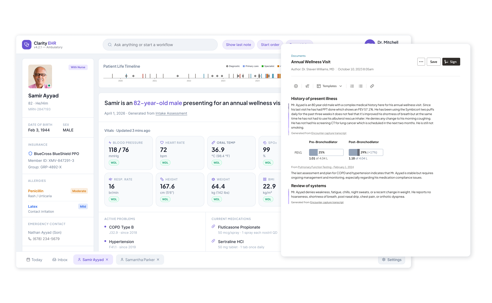
Apr 2024 – Oct 2025
18 months
UX Designer
Oracle Health Design
Clinical SMEs
Product & Engineering
User Research
Design for AI
Enterprise UX
Figma
This project is under NDA. Screens shown here are anonymized with my own components.
For every 8 hours doctors spend with patients, they spend 5 hours struggling through unusable EHR software to record long, bloated, redundant notes, a task significantly associated with physician burnout. [1] [2] [3] It's imperative that accurate and thorough healthcare records are kept, but currently the burden falls on physicians.
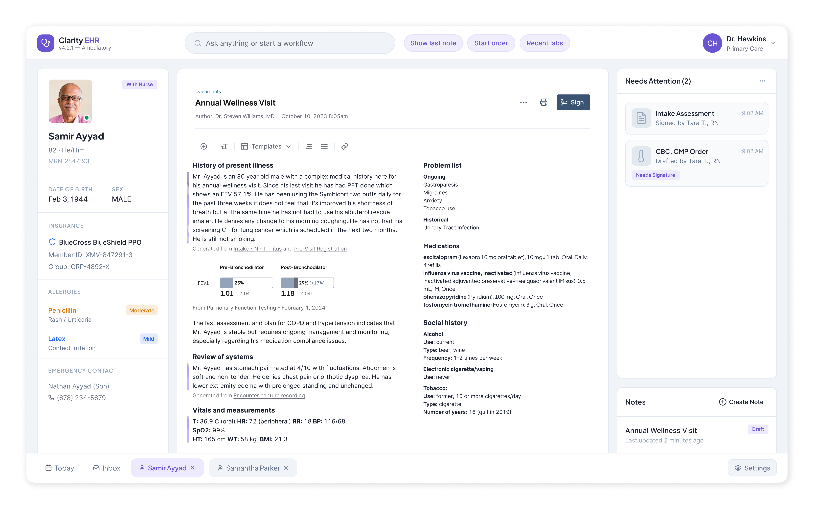
I worked closely with our physician subject matter experts (shoutout Dr. Wall) to understand how documentation impacts their work and their emotional state. To most physicians:
It weaves its way into snatches of time wherever physicians can manage - glancing between their patient and the screen as they jot notes, dictating a few words in the hallway between visits, or in long hours tacked onto the end of a shift. Besides the practical difficulty of this task, doctors hate that they’re forced to spend less face-to-face time with patients.
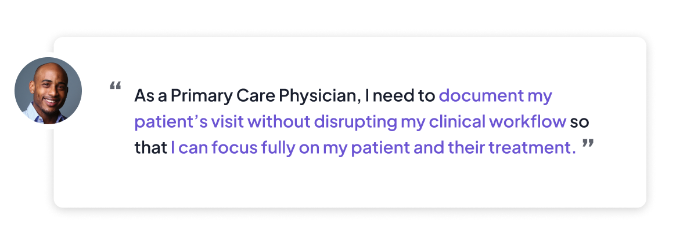
When a visit starts, we already have a wealth of information at our hands: the patient's medical history, the type of appointment they booked, the reason for visit, and tons of extra detail from their pre-visit registration forms, or gathered by the nurse during intake. Using this, we can:
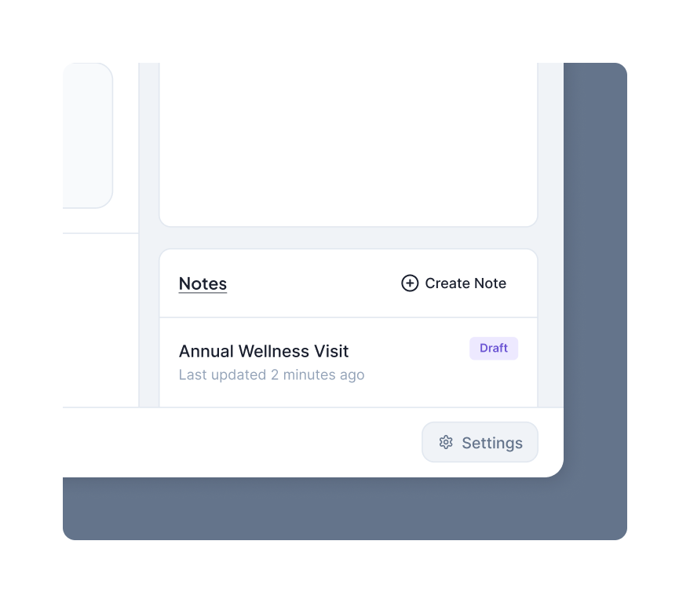
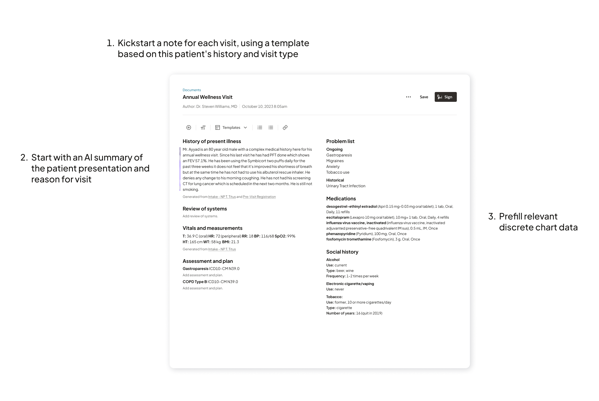
With Oracle Health's clinical assistant, doctors can use their mobile device to record visit audio, and place it unobtrusively face-down and on the counter. As they discuss the situation face-to-face with their patient, the assistant extracts information from the audio, contributing to the note and even drafting orders for the physician to confirm later.
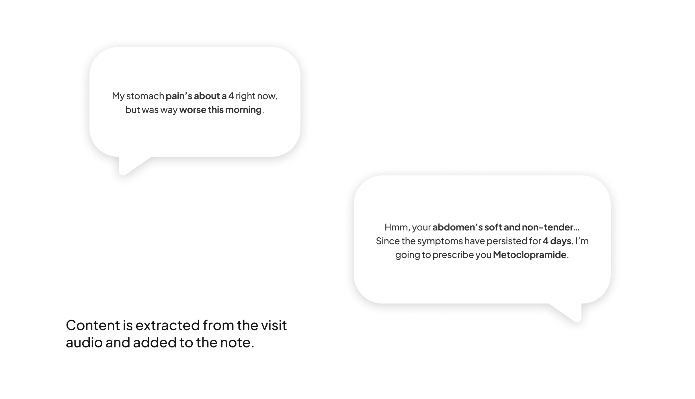
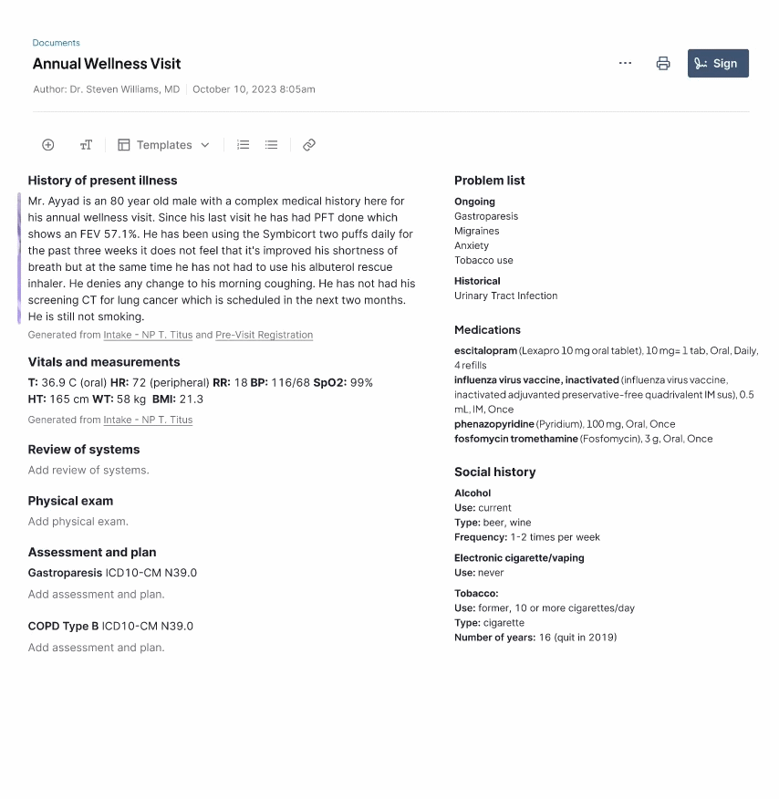
But, automatically writing a note won't solve everything.
So, every data point that contributes to their assessment, every differential diagnoses they rule out in their heads, and the reasoning behind the plan they prescribe must be laid out for a legal, regulatory, and medical trail.
Physicians navigate through the patient's record, gathering lab results, trends in vitals, details from previous visit notes, etc. and adding them to the note. "Copy-pasting" is a major legal no-no in medicine, so we created a shortcut in our software to collect this information with clear attribution and hyperlinks back to the original source.
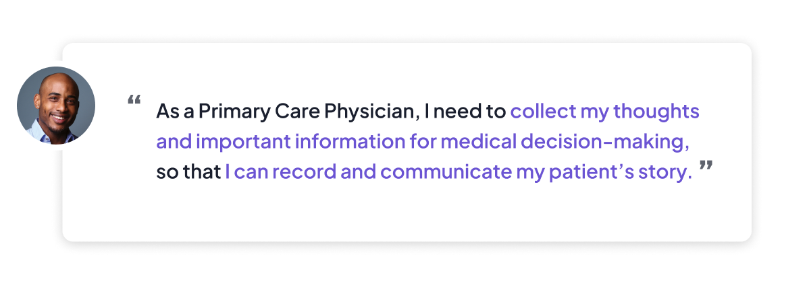
Oracle's conversational Ask Oracle framework facilitates these workflows. Users can use commands (verbal or typed) to add results, or drag-and-drop any information they need. We can intelligently place the content in the note's structure, and allow doctors to rearrange and add commentary freely.
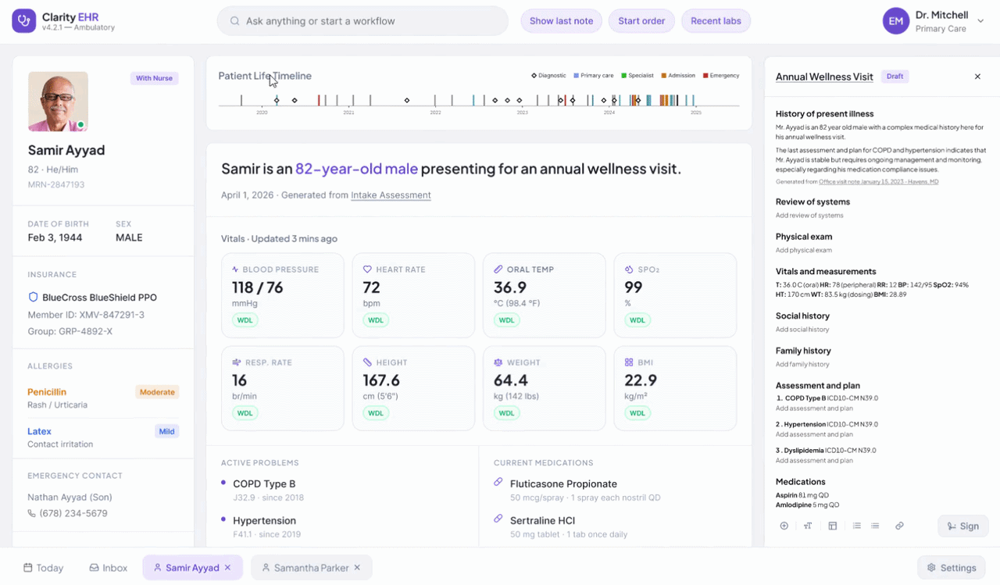
Another learning from my physician partner is that since the transition to electronic health records, physician notes have gotten worse, not better. For repeat visits or long-term treatments, it became common practice to duplicate the old note and write more on top. EHR notes have grown 60% longer and 11% more redundant over the last few years. [3]
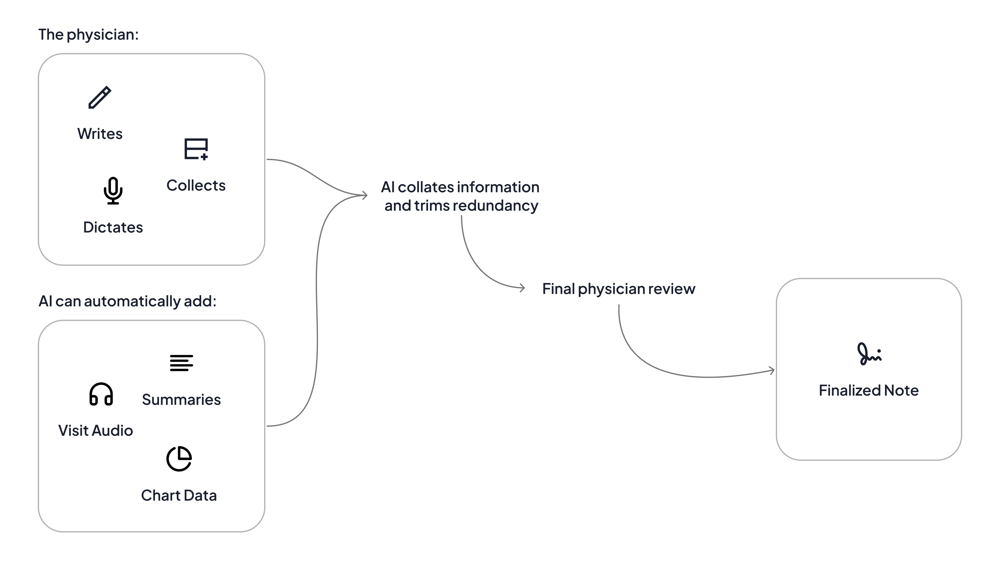
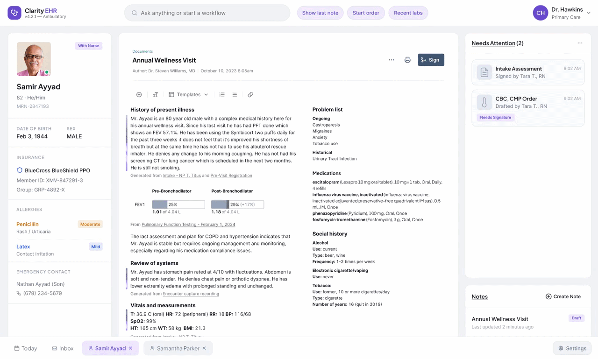
As the experience definition phase of documentation wrapped up, with a roadshow of my final demos across the VP level, I continued to work with developers on incremental implementation.
At the same time, the nursing product team reached out - they were starting to redesign forms-based charting, and asked for me specifically based on my reputation with the other documentation PMs! So I took on a new project, building a great collaboration with our nursing experts and revolutionizing the charting experience.
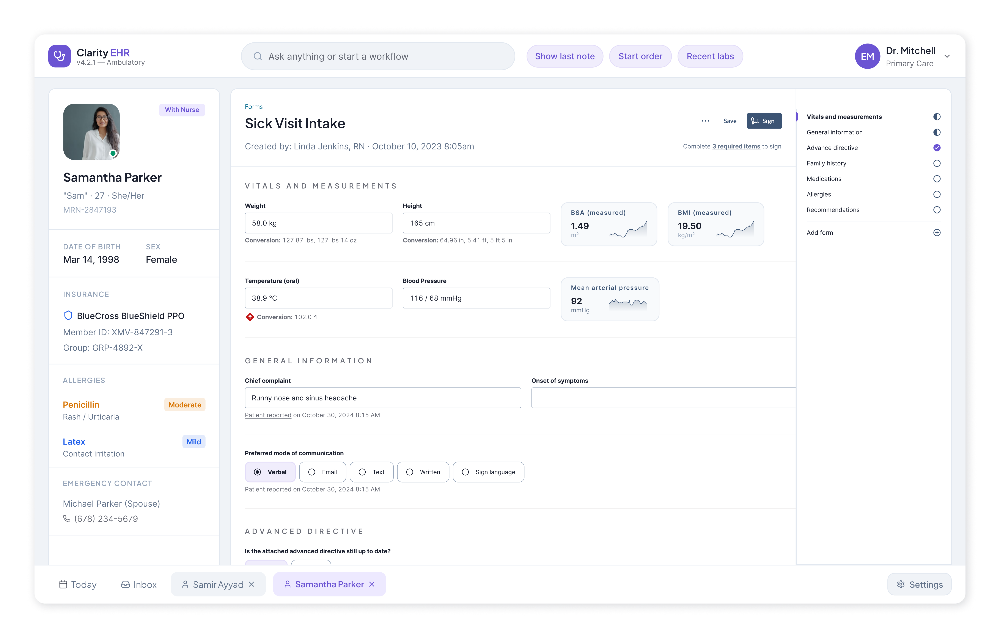
Nurses shares the same goal; to record accurate, thorough information without breaking their attention from their patient. But, form-based charting involves many fields of discrete data, rather than a written narrative. Just like for notes, extracting information from the visit audio was a huge advantage. Beyond that, I focused on three unique innovations:
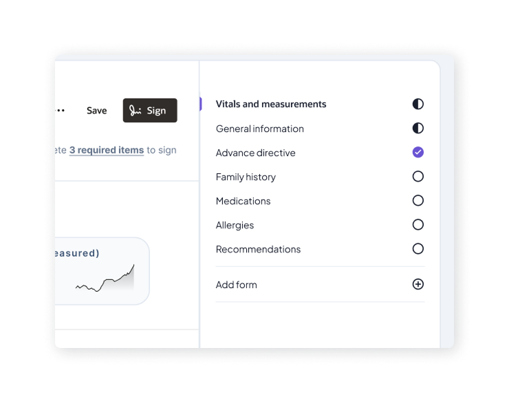
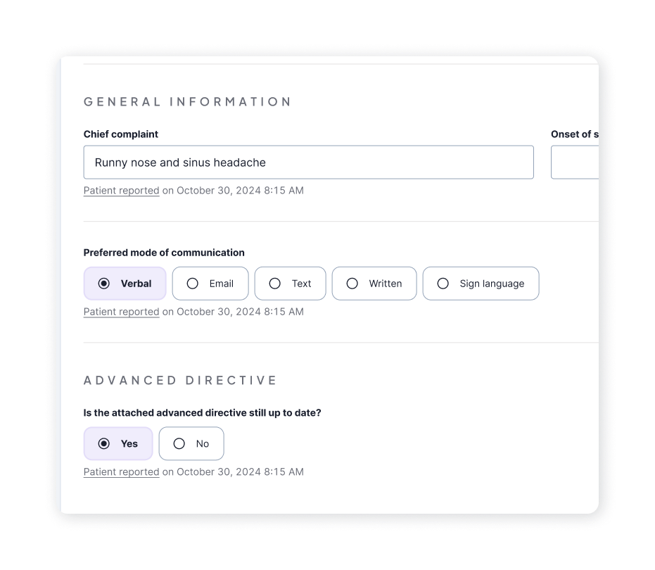
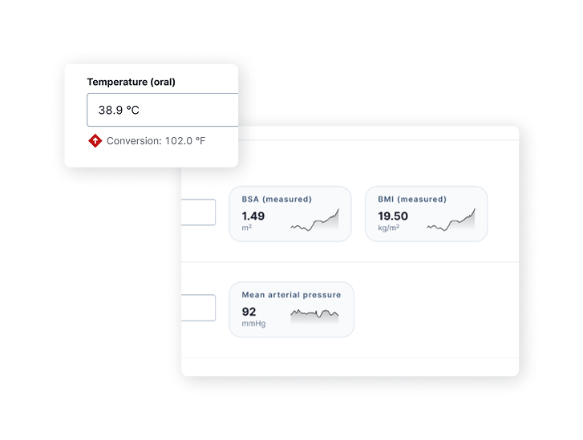
Led 2 workstreams end-to-end across 18 months, from early research and concept exploration to providing dev support for shipped code.
I designed patterns that were picked up and scaled across the EHR - my information-gathering feature made it into messaging and financial administrative products; the side-by-side "review and do" modality applied to acute and specialty workflows; my AI strategy drove the direction of our automatic meds reconciliation workflow; my charting guided workflow faciliated the medication administration workstream.
It feels amazing to not only see my designs in action, but also see my influence across other products and workstreams!
I helped reignite our relationship with our nursing client base with work that resonated with their experiences and represented their needs. We host a weekly workgroup of clients where we do research and show products/demos for feedback. This group was waning in engagement and excitement for a while, until I presented my initial charting demo! We had the most active engagement our facilitator had seen yet, and sparked lively discussion and critique. It was instrumental in reaching the final design, and so rewarding to chat about the work with nurses directly.
Up next: Oracle Patient Portal / Oracle Clinical / Oracle Procurement / Norfolk Southern / Bits of Good / Keeb / Spence